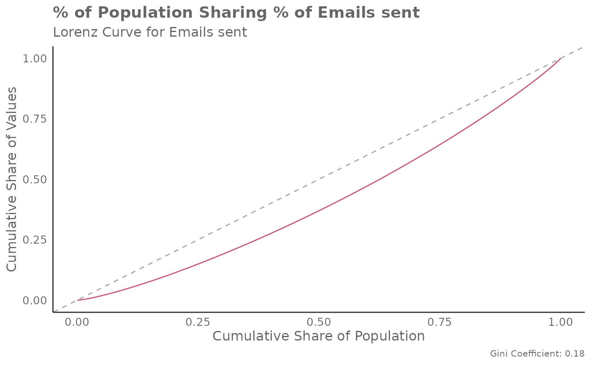

Calculate the Lorenz Curve and Gini Coefficient in a Person Query
Source:R/create_lorenz.R
create_lorenz.RdThis function computes the Gini coefficient and plots the Lorenz curve based on a selected metric from a Person Query data frame. It provides a way to measure inequality in the distribution of the selected metric.This function can be integrated into a larger analysis pipeline to assess inequality in metric distribution.
Arguments
- data
Data frame containing a Person Query.
- metric
Character string identifying the metric to be used for the Lorenz curve and Gini coefficient calculation.
- return
Character string identifying the return type. Options are:
"gini"- Numeric value representing the Gini coefficient."table"- Data frame containing a summary table of population share and value share."plot"(default) -ggplotobject representing a plot of the Lorenz curve.
Gini coefficient
The Gini coefficient is a measure of statistical dispersion most commonly used to represent income inequality within a population. It is calculated as the ratio of the area between the Lorenz curve and the line of perfect equality (the 45-degree line) to the total area under the line of perfect equality. It has a range of 0 to 1, where 0 represents perfect equality and 1 represents perfect inequality. It can be applied to any Viva Insights metric where inequality is of interest.
Examples
create_lorenz(data = pq_data, metric = "Emails_sent", return = "gini")
#> [1] 0.1839071
create_lorenz(data = pq_data, metric = "Emails_sent", return = "plot")

create_lorenz(data = pq_data, metric = "Emails_sent", return = "table")
#> # A tibble: 11 × 2
#> population_share value_share
#> <dbl> <dbl>
#> 1 0 0.00000659
#> 2 0.1 0.0457
#> 3 0.2 0.112
#> 4 0.3 0.190
#> 5 0.4 0.276
#> 6 0.5 0.370
#> 7 0.6 0.473
#> 8 0.7 0.584
#> 9 0.8 0.706
#> 10 0.9 0.840
#> 11 1 1